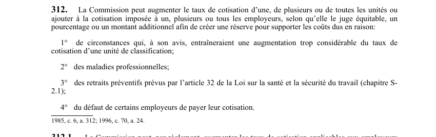

art-312-LATMP : réserve et majoration du taux de cotisation
Un article du wiki ⚖️ Recueil législatif
🌐 LegisQuébec · 📄 PDF officiel (page 77)
Texte officiel : capture du PDF

🔗 Ouvrir a cette page : LATMP.pdf : page 77 · texte a jour au 20 février 2024
En bref
La CNESST peut augmenter le taux de cotisation d'une, de plusieurs ou de toutes les unités, ou ajouter un montant additionnel.
- Afin de créer une réserve pour supporter les coûts dus aux augmentations trop considérables.
- Constitution d'une réserve par majoration du taux ou montant additionnel.
- Motifs : hausses trop fortes, maladies professionnelles, retraits préventifs, défauts de paiement.
Voir aussi
- art. 311 · faculté : la Commission peut augmenter le taux de cotisation de toutes les unités ou imposer une cotisation supplémentaire a tous les employeurs pour combler un déficit causé par un désastre.
- art. 313 · faculté : la CNESST peut augmenter la cotisation des employeurs d'un montant déterminé par règlement pour la gestion des dossiers qu'elle tient, lorsque ces frais ne sont pas financés au moyen des taux fixés en vertu des art.
- 🔢 Sous-article : art. 312.1 · faculté : la Commission peut, par réglement, augmenter les taux de cotisation applicables aux employeurs appartenant & un secteur d'activités pour lequel une association sectorielle paritaire a été constituée en vertu jour au 20 fever 2028 © Ealteur officiel du Québec A-3.001 /77 sur 142.
- ↑ Loi : LATMP